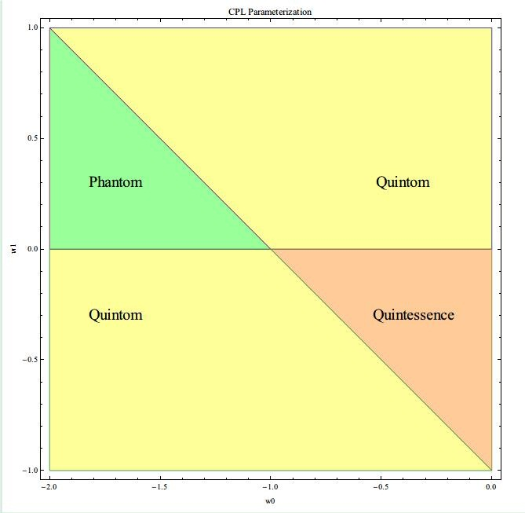

å…³äº�暗能é‡�那些稀奇å�¤æ€ªçš„å��å—
唯象的æ�¥çœ‹ï¼Œæš—能é‡�有些诡异的å��å—，å�¯ä»¥åˆ—一下主è¦�çš„[1]：
- Quintessence
- Phantom
- Quintom
Quintessence 就是 the fifth element, 或者说是 fifth essence. 有部电影就是讲这个的(The Fifth Element)。
Phantom å°±ä¸�用说了，到处出ç�°çš„一个è¯�，游æˆ�上，å°�说ä¸ï¼Œç”µå½±ä¸ã€‚å·®ä¸�多ç‰äº� Ghost å�§ï¼Œä¸�过好åƒ�比 Ghost æ›´åŠ æœ‰äº²å’ŒåŠ›ä¸€ç‚¹ã€‚
Quintom æ˜¯ä¸ªè‡ªé€ è¯�，没什么å�†å�²æ¸Šæº�，是将上é�¢ä¸¤è€…结å�ˆèµ·æ�¥çš„。是ä¸�是å�¯ä»¥ç�†è§£æˆ� The ghost who can use the power of the fifth essence 啊，哈哈ï½�
那，这些都是什么��呢？
这些å�¯ä»¥ä»�动力å¦çš„角度æ�¥çœ‹ï¼Œæ¯”如å�¯ä»¥å†™å‡ºä½œç”¨é‡�，然å��分æ��对我们æ�¥è¯´æœ€å¿…è¦�的一个é‡�：Equation of State (EoS).
一般而言，我们总�以把 Lagrangian 写�动能项和势能项，也就是说作用��以一般的写�如下形�：
[A=\int \mathrm d^4 x \sqrt{-g} (X-V)]
å…¶ä¸ (X) 代表动能项，(V) 代表势能项。下é�¢æˆ‘们æ�¥åˆ†ç±»ã€‚
- Quintessence ：
[X=-\frac{1}{2} \partial_\mu \phi \partial^\mu \phi]
è¿™æ ·å�¯ä»¥ç”¨ç»�典的å�˜åˆ†å�Ÿç�†æ�¥å†™å‡ºèƒ½åŠ¨å¼ é‡�，然å��å�¯ä»¥åˆ†ç¦»å‡ºèƒ½é‡�密度(\rho)å’Œå�‹å¼º(p)这两个é‡�。[2]
�在引入一个很��的�，EoS，状�方程。其定义如下：
[w=\frac{p}{\rho}]
这是我们用的状æ€�方程的定义。为什么è¦�è¿™æ ·å®šä¹‰ï¼Ÿå› ä¸ºè¿™æ ·å�¯ä»¥å��æ˜ è¯¥ç‰©è´¨çš„ç‰¹å®šçš„æ€§è´¨ï¼šå�‹å¼ºå’Œèƒ½é‡�密度的关系。为什么ä¸�写æˆ�(\rho/p)ï¼Œå› ä¸º(p)å�¯èƒ½ä¸º0。
ç”±æ¤ï¼Œæˆ‘们得到 Quintessence çš„ EoS ，
[w=\frac{\frac12 \dot\phi^2-V}{\frac12 \dot\phi^2+V}]
如æ¤ä»¥æ�¥ï¼Œå› 为动能项一直是æ£çš„，势能项å�ˆæ˜¯è´Ÿå€¼ï¼Œæ‰€ä»¥ Quintessence çš„ EoS 有一下特点
[0>w>-1]
å¾ˆæœ‰è¶£ï¼Œå› ä¸º LCDM 模å�‹æ‰€å¯¹åº”的唯象的 EoS æ�°å¥½æ˜¯ -1。所以说 -1 的状æ€�方程很é‡�è¦�，下é�¢å�¯ä»¥æ›´æ¸…楚的看到这一点。
- Phantom ：
[X=\frac{1}{2} \partial_\mu \phi \partial^\mu \phi]
å�Œæ ·çš„方法，å�¯ä»¥å¾—到 Phantom çš„ EoS 为
[w=\frac{\frac12 \dot\phi^2 + V}{\frac12 \dot\phi^2 – V}]
æ£å¥½æ˜¯ä¹‹å‰�çš„å€’æ•°ã€‚å› æ¤è¿™ä¸ªåº”该是：
[w< -1]
- Quintom ：
Quintom 采�了兼容并包的方法，也就是把之�两者都包�进�了：
[X=-\frac{1}{2} \partial_\mu \phi \partial^\mu \phi+\frac{1}{2} \partial_\mu\psi \partial^\mu \psi]
�以得到一个更一般的状�方程
[w=\frac{\frac12 \dot\phi^2-\frac12 \dot\psi^2-V}{\frac12 \dot\phi^2-\frac12 \dot\psi^2+V}]
�出所料，这个状�方程应该是�以穿过 -1 的。
干嘛用的？
为什么è¦�è¿™æ ·åˆ†ç±»å‘¢ï¼Ÿå› ä¸º (w<-1) å’Œ (0>w>-1) 的暗能é‡�å�¯ä»¥å¸¦ç»™å®‡å®™ä¸�å�Œçš„命è¿�。å�¯ä»¥æƒ³è±¡ä¸€ä¸‹ï¼Œå¦‚æ�œæš—能é‡�有ç�€å¾ˆå¤§çš„呀强，那么å�Œæ ·å¤šçš„暗能é‡�，å�¯ä»¥æ��ä¾›æ›´å¼ºçƒˆçš„åŠ é€Ÿï¼Œå› æ¤å®‡å®™æ’•è£‚将会更容易出ç�°æˆ–者更快出ç�°ã€‚相å��，我们倒是有å�¯èƒ½ç”Ÿæ´»åœ¨ä¸€ä¸ªå®‰ç¨³çš„宇宙ä¸ã€‚
å› æ¤åˆ†æˆ�ä¸�å�Œçš„类别æ�¥è€ƒå¯Ÿä»–们对宇宙演化的影å“�是很自然的。
为什么��到 EoS ？
å› ä¸ºè¿™å®¶ä¼™å¾ˆç›´æ�¥çš„å½±å“�到我们的宇宙的命è¿�。如何？
我们å�¯ä»¥é€šè¿‡ Friedmann 方程æ�¥è€ƒå¯Ÿå®‡å®™çš„演化，其ä¸ä¸€ä¸ªæ¯”较é‡�è¦�的问题是：我们的宇宙会是一直膨胀下å�»è¿˜æ˜¯ä¼šå…ˆè†¨èƒ€ç„¶å��å��缩？
把 EoS 的定义带入进æ�¥ï¼Œå�¯ä»¥é€šè¿‡1766å�·æ–‡ç« ä¸çš„方法æ�¥è€ƒå¯ŸèƒŒæ™¯å®‡å®™çš„æ¼”åŒ–ã€‚è¿™æ ·å°±å�¯ä»¥çŸ¥é�“，ä¸�å�Œç±»å�‹çš„暗能é‡�，对宇宙的演化的作用ä¸�å�Œã€‚比如，Phantom 将会带给我们 big rip，我们的世界将会æ¯�ç�，一切都将ä¸�å¤�å˜åœ¨ã€‚
å› ä¸ºæˆ‘ä»¬ä¸�知é�“暗能é‡�是什么，所以我们也ä¸�能准确的知é�“ EoS 是什么形å¼�。å�Ÿåˆ™ä¸Šæ�¥è¯´ï¼Œåœ¨æˆ‘们弄清楚暗能é‡�本质之å‰�，å�ªèƒ½å”¯è±¡çš„把 EoS å�‚数化。
有个挺有æ„�æ€�çš„å°�事情：我们å�¯ä»¥æŠŠä¸�å�Œæ–¹æ³•å�‚数化的 EoS 的相图找到，分æˆ� Phantom, Quintessence å’Œ Quintom ç‰åŒºåŸŸï¼Œè¿™æ ·æ›´åŠ 方便的知é�“è¿™ç§�å�‚数化的覆盖的范围。
比如比较�典的�数化形� CPL �数化[3]的。

- 其他的比如 K-essence 之类的，æ¤å¤„ä¸�æ��。 ↩
- 如何å�šï¼Ÿæˆ‘们一般定义能é‡�密度(\rho)为 (T^0_0=-\rho)，这个å�·å·®æ— 关。如æ¤æˆ‘们å�¯ä»¥é€šè¿‡å�˜åˆ†å�Ÿç�†æ±‚å‡ºèƒ½åŠ¨å¼ é‡�的表达å¼�，然å��放到这个定义ä¸ï¼Œæ—¢å�¯å¾—到能é‡�密度的表达å¼�。至äº�å�‹å¼ºï¼Œå› 为我们用了ç�†æƒ³æµ�体模å�‹ï¼Œæ¤å¤„就直æ�¥å®šä¹‰ (T_{ij}=g_{ij} p)，å�Œæ ·çš„方法得到å�‹å¼ºè¡¨è¾¾å¼�。æ¤å¤„å�˜åˆ†åº”å½“è®¤ä¸ºå¼•åŠ›ä¸ºåŸºæœ¬åœºï¼Œå› ä¸ºæˆ‘ä»¬è€ƒå¯Ÿçš„æ˜¯ä¸€ä¸ªå¼•åŠ›ä½“ç³»ä¸çš„引力场的性质，ä¸�一般å�šæ³•è¿‡ç¨‹ç¨�有区别，结æ�œä¸€è‡´ã€‚ ↩
- CPL parameterization, or Chevallier-Polarski-Linder parameterization.[w=w0 + wa \frac{z}{1+z}=w0 + wa (1-a)]这里 (z) 为红移[4]， (a=1/(1+z)) 为 scale factor 。 ↩
- Redshift, same definition as the one in Doppler effect. However it is generalized in Cosmology. Check Wikipedia for more information. ↩

我是冲ç�€æ€ªå��å—è¿›æ�¥çš„，结æ�œæ²¡çœ‹æ‡‚什么，都是一些积分公å¼�
哈哈，ä¸è®¡äº†å�§~
å¦æ ¡é‡ŒçœŸçš„è¦�å¦é‚£ä¹ˆéš¾çš„æ•°å¦ï¼Ÿ
用到的就得看的�